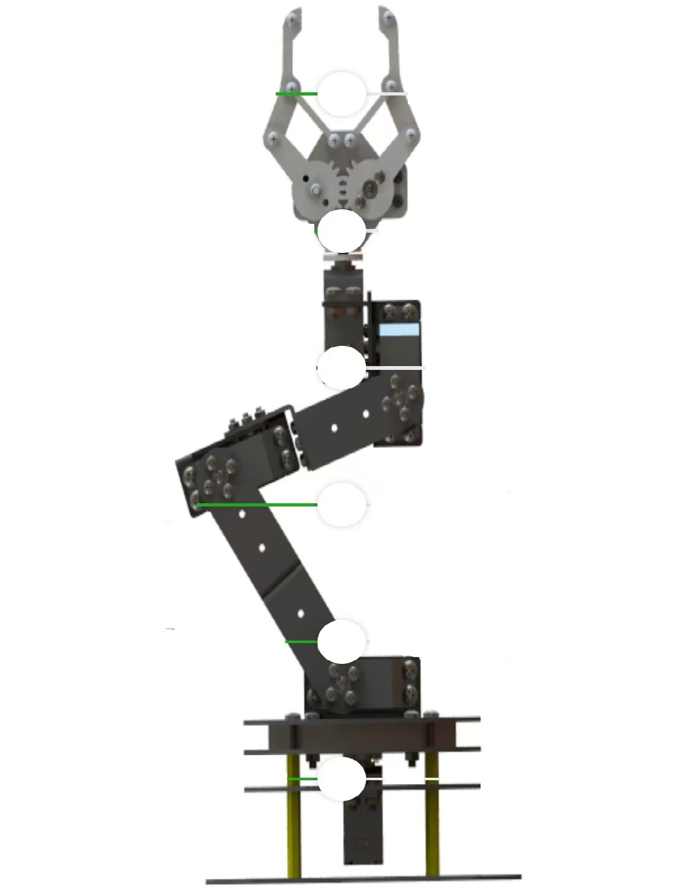

⚙ 配置
机械臂控制系统1.220
🔵 连接蓝牙
未连接蓝牙

张开
闭合
左转
右转
向后
向前
向后
向前
向后
向前
左转
右转
功能配置
选择按钮序号
滑块1-左(张开)
滑块1-右(闭合)
滑块2-左(左转)
滑块2-右(右转)
滑块3-左(向后)
滑块3-右(向前)
滑块4-左(向后)
滑块4-右(向前)
滑块5-左(向后)
滑块5-右(向前)
滑块6-左(左转)
滑块6-右(右转)
按钮 G1
按钮 G2
按钮 G3
按钮 G4
停止按钮
复位按钮
按钮显示名称
按下命令
抬起命令 (可选)
保存
取消